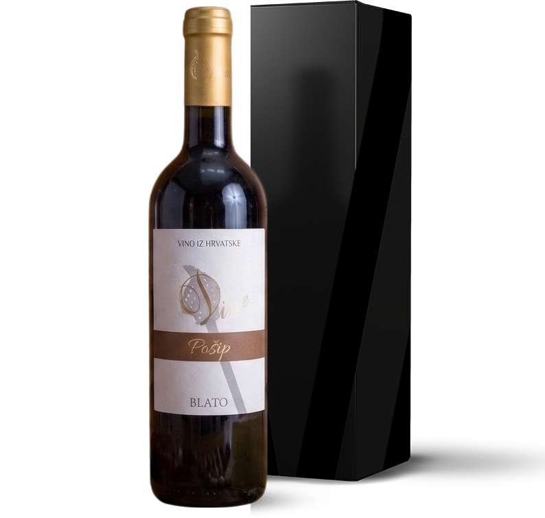

Profinjenost u boci
Uzdizanje umjetnosti vinarstva sa strasnošću i tradicijom obitelji Sardelić iz Blata na Korčuli.


Tradicija obitelji Sardelić iz Blata na Korčuli
Dine wines are born in the vineyards of the Sardelić family, near the place Blato on the island of Korčula, where the cellars are also located. In this hilly place, before juices start coursing through the vines, a drop of sweat from all the effort, constant striving and work transforms and becomes a drop of love, happiness and success… And as such arrives to the table in the Dine wines – without any additional transformation or modification.
Generally, Dine wines are characterized by simplicity and originality. Each individual variety has been made into a wine which has been carefully controlled on the way from the vine to the bottle, so that the characteristics of the variety are easily recognizable in every wine, at the same time acknowledging the outside factors that determine the conditions of this path and of the end product – the wine. Sometimes these wines surprise us with their simplicity, and then convince us that that is exactly how wines should be.
Just like every beginning… Just like youth… Bold, direct and daring… Exactly so!


Degustacije i Ture
Doživite srce našeg podruma kroz vođene ture i privatne degustacije u Blatu na Korčuli.
Pročitaj višeProslave i Vjenčanja
Prekrasna kulisa za vaše najdragocjenije trenutke i privatne proslave u prirodi.
Pročitaj više